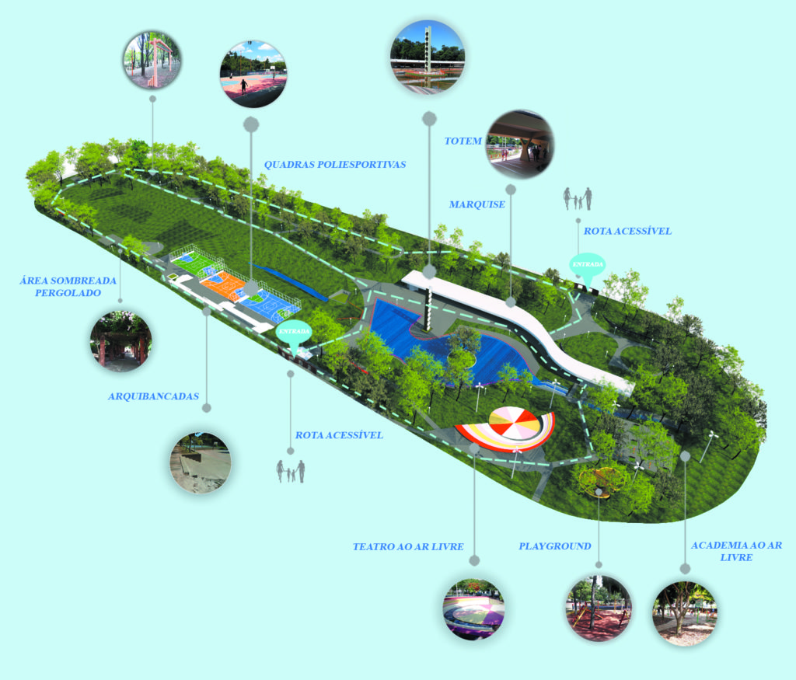
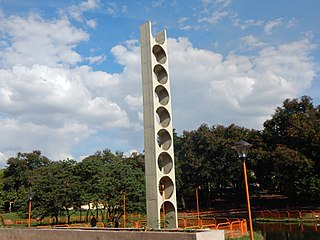

O parque se formou ao redor do Córrego do Medeiros, no ano de 1982, localizado entre os bairros da Boa Vista e Jardim Botafogo na cidade de São Carlos. A origem do nome “Bicão” vem de uma bica d’água que abastecia a população do entorno. Em uma placa datada do ano da inauguração, consta a designação do espaço como “Centro de Lazer Joaquim da Rocha Medeiros”, no entanto, não há nenhuma documentação oficial que regulamente a titulação. Em função disso, em 2001, através da Lei Municipal 12.820/01, o parque recebeu o nome de “Veraldo Sbampato”.
O Parque do Bicão é uma área com espaços verdes e arborizados, além de abrigar um pequeno lago e 3 (três) nascentes. Vale ressaltar que o parque é uma área de preservação permanente (APP) e é protegida de acordo com os termos em lei (Lei nº 4.771/65) do Código Florestal. Atividades de pesca e/ou caça no ambiente são proibidas, apesar de em ocasiões específicas a Prefeitura de São Carlos permitir a pesca esportiva com varas de bambu.
